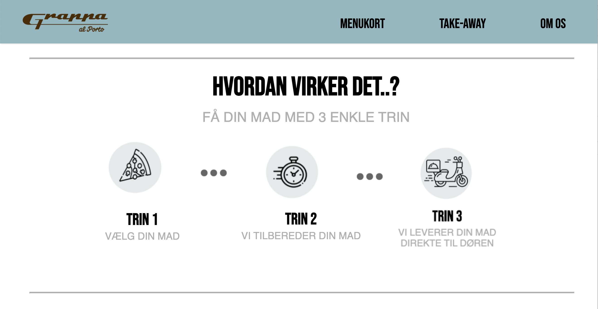
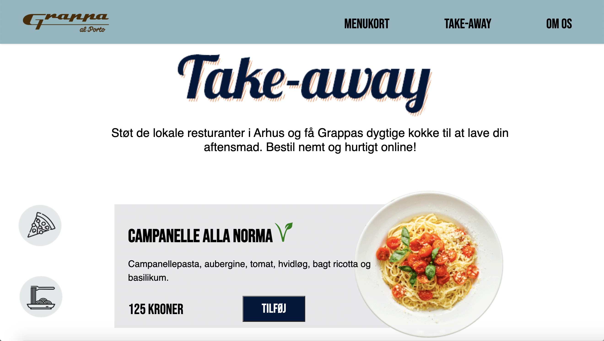
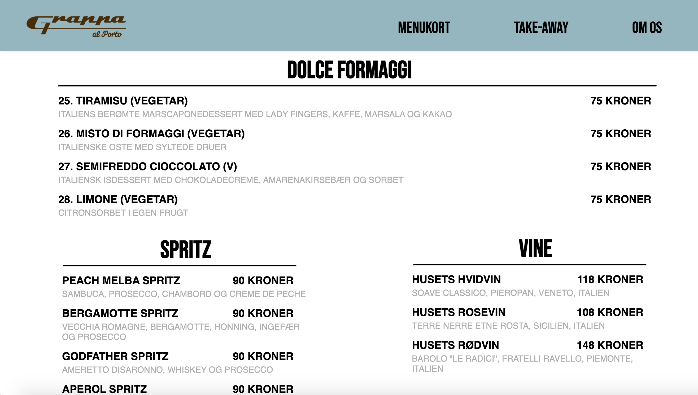

Restaurant Grappa
   I forbindelse med nedlukningen af landet grundet covid-19 lavede vi i foråret 2020 en online take-away side til en restaurant i det centrale Aarhus.
Formålet var at skabe en fortsat indtægt for restauranten ved at tilbyde take-away på deres allerede eksisterende hjemmeside.
Vi havde gennem projektet stor fokus på at skabe grafiske elementer, som skulle føre brugeren let igennem den online bestilling af maden samt gøre det muligt for brugeren at kunne følge sin bestilling hjemmefra.
Klient: Restaurant Grappa
Dato: maj 2020